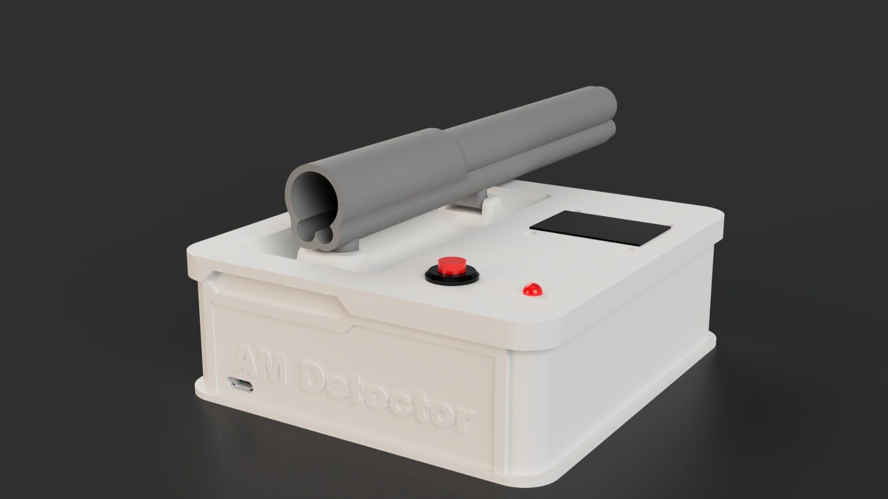
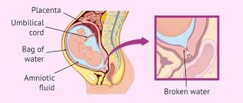
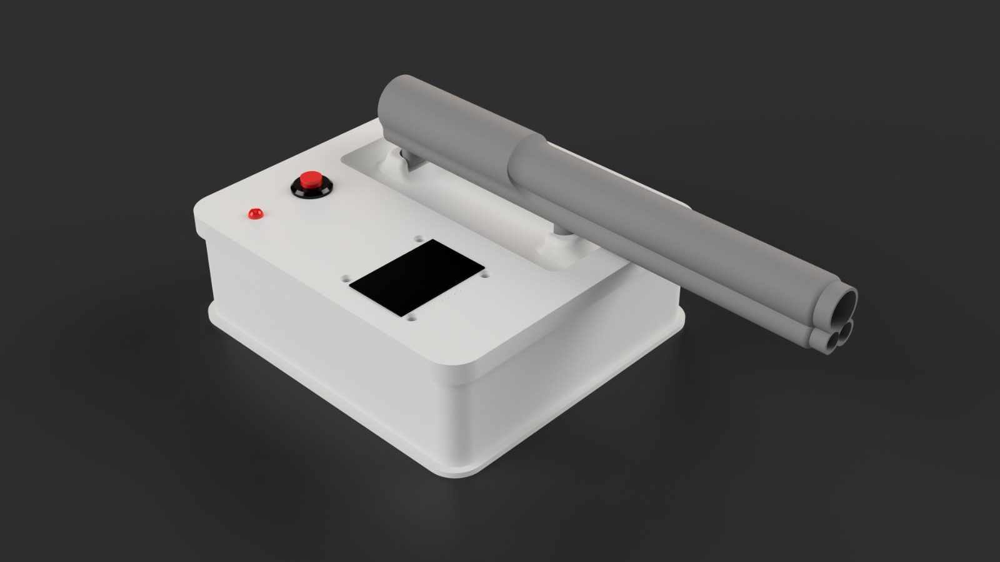
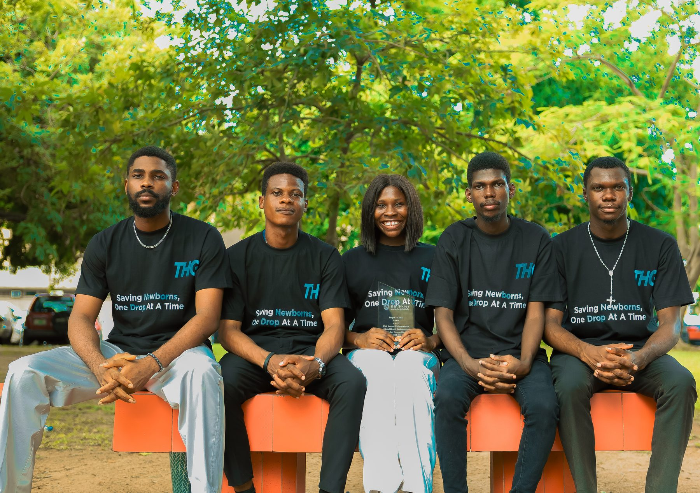
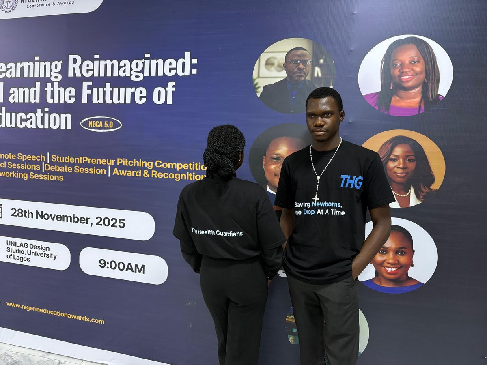

Our Mission
To give every pregnant woman fast, affordable and trustworthy information about her pregnancy, so that no one has to choose between expensive certainty and uncertain waiting.
JELOS HEALTH LTD · Lagos, Nigeria
JELOS HEALTH LTD is a Nigerian health technology company. Through our research team, The Health Guardian, we are developing AM Detector, a portable device that helps pregnant women detect amniotic fluid leakage quickly, so they can seek care before it is too late.

I. About JELOS HEALTH
JELOS HEALTH LTD is incorporated in Nigeria under the Companies and Allied Matters Act 2020 as a private company limited by shares (RC 9819888). We build affordable diagnostic technology for mothers and newborns, starting with AM Detector.
Our research and innovation work is carried out by The Health Guardian, the company's research team. The team works from the University of Lagos Design Studio Innovation Hub, bringing together biomedical, electrical, mechanical and computer engineering, and carries out its clinical research in collaboration with Lagos University Teaching Hospital (LUTH), Idi-Araba.
Our focus is maternal and newborn health in low-resource settings. We design medical technology locally, test it rigorously, and price it for the families and facilities that need it most.
To give every pregnant woman fast, affordable and trustworthy information about her pregnancy, so that no one has to choose between expensive certainty and uncertain waiting.
Evidence first. We design carefully, test against clinical samples, and seek ethical approval before every clinical study.
Locally engineered, locally manufactured, and designed for the realities of Nigerian and African health facilities, from teaching hospitals to primary health centres.
II. The Problem
Preterm Premature Rupture of Membranes (PPROM) happens when the amniotic sac breaks before 37 weeks of pregnancy. Without timely care it can lead to infection, fetal distress, premature birth and, in the worst cases, the loss of a newborn.
The leak is often small or intermittent, and easy to mistake for urine or normal discharge. Many women either wait, unsure whether anything is wrong, or travel to hospital for an expensive workup. Confirmatory tests are costly and rarely available outside major hospitals.

III. Our Innovation
AM Detector helps pregnant women and their health workers detect PPROM early. A simple swab sample, collected externally, is tested by the device and the result is displayed within a few minutes, so a mother knows when she needs to seek care.

A small sample is collected externally with a swab. No speculum or internal examination is needed.
The device tests the sample using our patent-pending detection technology.
A clear result is displayed within a few minutes: amniotic fluid likely, not detected, or retest. Repeated inconclusive results direct the user to seek medical care.
Designed to minimise false results.
Reusable device, low running cost.
One button, plain-language results.
Pocket-sized, battery powered.
External swab collection only.
Please note: AM Detector is an investigational device under development. It is not yet approved for clinical or home use and does not replace assessment by a qualified health professional.
IV. Research & Milestones
Our work moves in deliberate steps: engineering, laboratory testing, ethical review, then clinical validation.
First functional prototype built and bench-tested at the University of Lagos Design Studio Innovation Hub.
People's Choice Award at the Rice360 Design Competition for global health technologies.
Laboratory testing on amniotic fluid samples in collaboration with Lagos University Teaching Hospital (LUTH), used to refine the device.
Non-dilutive prototype funding from the Nigerian Engineering Olympiad and development support from ITMO.
Study protocol submitted to the LUTH Health Research Ethics Committee for an expanded clinical evaluation.
Patent application for the AM Detector technology filed in Nigeria. The technology is patent pending.
Incorporated by the Corporate Affairs Commission as a private company limited by shares (RC 9819888) to take AM Detector to market.
Ethically approved clinical study, pilot deployments with partner maternity facilities, and preparation for regulatory review.
V. Our Team
The Health Guardian is the research and innovation team of JELOS HEALTH LTD: five engineers and entrepreneurs who founded the company together.

Chief Executive Officer
B.Sc. Biomedical Engineering. Leads strategy, partnerships and customer engagement.
Co-founder · Chief Technology Officer
First-class B.Eng. Electrical & Electronics Engineering. Leads electronics, firmware and embedded systems.
Co-founder · Business Lead
B.Sc. Computer Science. Leads business development, market strategy and finance.
Co-founder · Product Design Lead
B.Sc. Mechanical Engineering. Leads mechanical design, enclosure and 3D-printed prototyping.
Co-founder · Operations & Research Lead
B.Sc. Electrical & Electronics Engineering. Coordinates research operations and testing.
Collaborators, supporters & recognition
VI. Contact
We welcome enquiries from hospitals and maternity facilities, researchers, funders, investors, distributors and the press. Send us a request and our team will get back to you.
